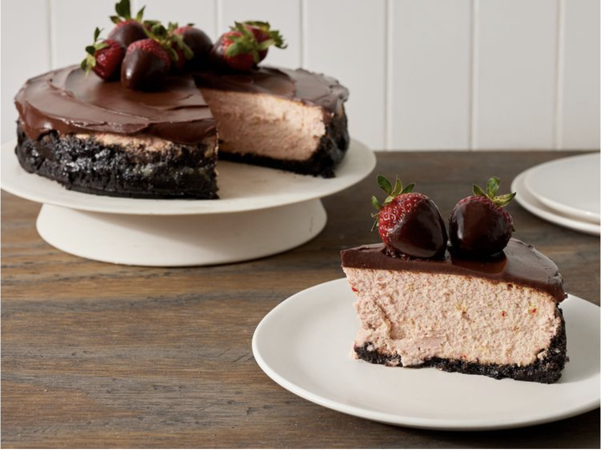

Chocolate Strawberry Cheesecake
Main Page

Description:
Ingredients:
Crust:
- cooking spray
- 1 (9 ounce) box chocolate wafer cookies (such as Nabisco® Famous Chocolate Wafers)
- 5 tablespoons unsalted butter, melted
- 3 tablespoons granulated sugar
Cheesecake:
- 1 cup chopped fresh strawberries
- 5 (8 ounce) packages cream cheese, softened
- ½ cup granulated sugar
- 3 tablespoons all-purpose flour
- 5 large eggs
- 2 large egg yolks
- 2 teaspoons vanilla extract
- 1 teaspoon lemon zest
- 1 tablespoon freshly squeezed lemon juice
- 2 drops pink gel food coloring
Chocolate Ganache:
- 1 cup heavy whipping cream
- 1 (4 ounce) bar semisweet chocolate, finely chopped
- 1 (4 ounce) bittersweet chocolate, finely chopped
- 10 whole and halved strawberries, for garnish
Steps